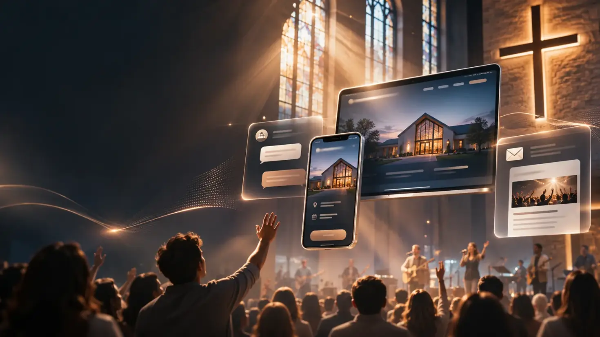

EXAMPLE EVENT · THURSDAY
06
Community Dinner
Great food. Better conversations. A seat at the table for you.
Wherever you're coming from, whatever you're carrying—there is a place for you here. We can't wait to meet you.
There's something beautiful about being known. At Haven, we make room for big questions, messy stories, genuine friendship, and a hope that changes everything.
You don't need to have the perfect words, the perfect past, or everything figured out. Just come as you are.
Trying a new church can feel intimidating. Here's what a clear visit experience can look like.
Dress like you. Jeans, sneakers, Sunday best—everyone is welcome.
A helpful team can show your family where everything is.
Tell us you're coming, and we'll help make your first Sunday feel easier.
A community isn't built in an hour on Sunday. It's built around tables, conversations, and showing up for one another.
Great food. Better conversations. A seat at the table for you.
Love where you live. Serve alongside neighbors and friends.
Ask questions, meet the team, and discover ways to get involved.

We believe faith changes our everyday lives, not just our Sundays. You can explore, belong, grow, and bring your questions along.
CONNECT WITH US ↗